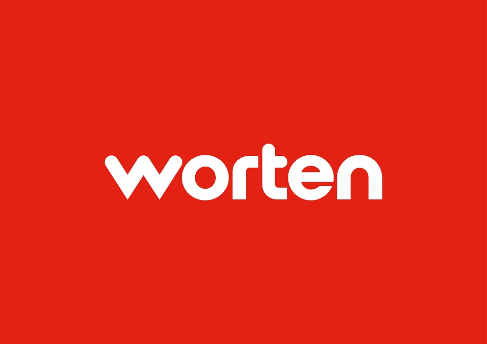
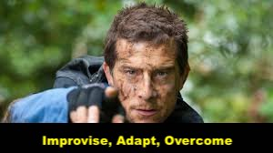
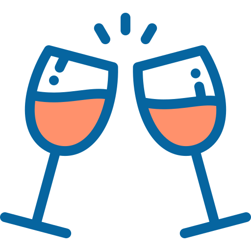
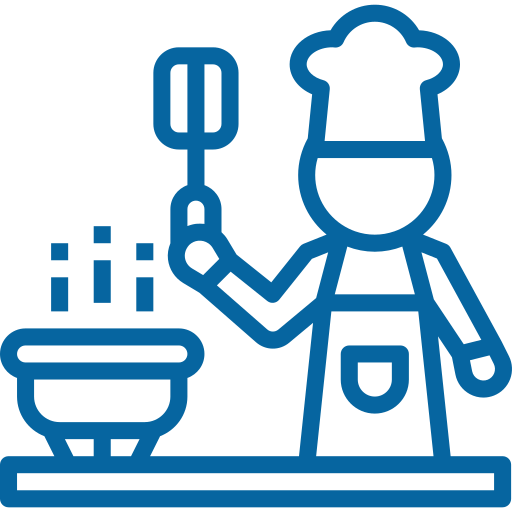
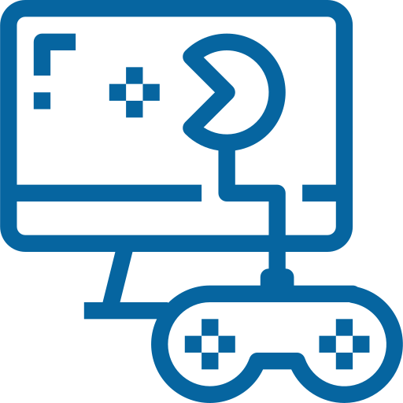
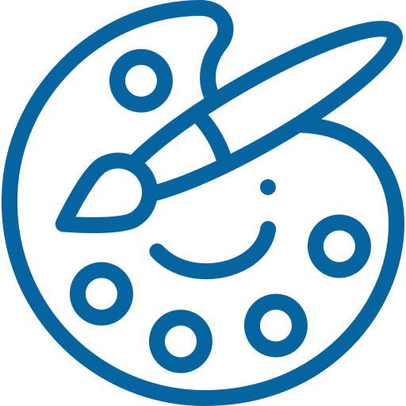
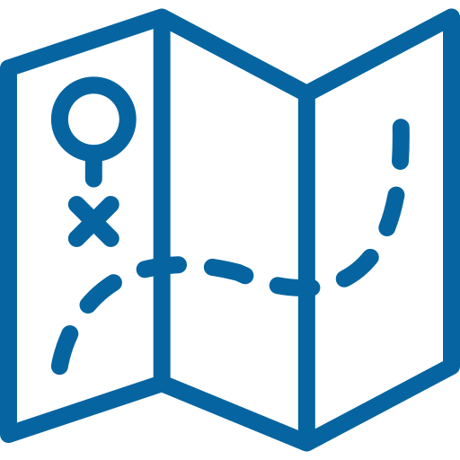

Afonso Silva
IT Developer
Introduction
After finishing a 3 year course in Management and Programming of Computer Systems I am now studying mobile development and looking to invest in gaming in my developer career.
My experience in the area is a 5 month Internship at Reditus SA in web development where I got to work with new tools such as Angular.
My most valuable skills would be C# development and Image and UI editing through tools such as Adobe Illustrator and Adobe Photoshop.
I was also able to greatly improve my communication skills in a 3 month part-time job at a retail store where I worked closely with clients and gave them advice on computer software and hardware purchases.
About Me
I was born on February 7th 1996 in Angola and around when I turned 4 I moved with my family to Portugal where I grew up and am still living.
When I was little I really liked playing with legos and wanted to study architecture or civil engineering like my uncle but that changed as soon as I met a computer for the first time. I was amazed at all the possibilities it brought with it and soon changed what I aspired to do in the future.
I am mostly a very calm and passive individual but can get out of my shell if I am excited about something or when discussing something of my interest.
Languages
- Portuguese (Mother Tongue)
- English
Strengths
I am very passionate about what I really like and having 2 younger brothers made me a more responsible person since I had to look out for them.
Weaknesses
Like most human beings I have a lot of flaws and I have been able to improve in some areas but the one that I am the least proud of would be that I am a really slow starter.

Education
2016 - Present
Mobile Development
2013 - 2016
Management and Programming
of Computer Systems
Work Experience
March 5th 2018 - Present
Internship in Web
and Mobile Development
November - December 2017 October - December 2016
Part-time as store operator
for the informatic division
at Worten Colombo
Skills
Even though some are fresher than others
I was always taught to...
Mobile
Android
Swift
Desktop
C#
C++
Web
HTML5
PHP
CSS3
Javascript
Server
SQL
MySQL
Firebase
UI/UX
Illustrator
Photoshop
Xd
Projects
At the moment I don't have much to show but the little I can share is on my git which you can tap into below.
Hobbies
Socialize
Cooking
Gaming
Art
Exploring
Contacts
I am always available for new challenges and learning experiences.
You can always contact me by sending an email to afonsomfdsilva@gmail.com